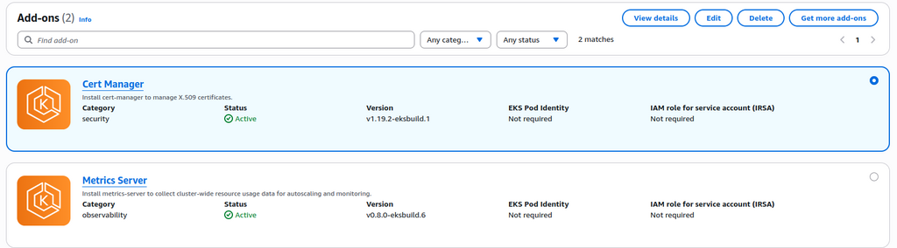
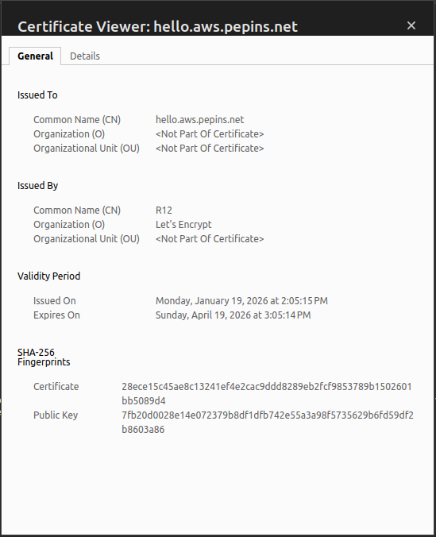
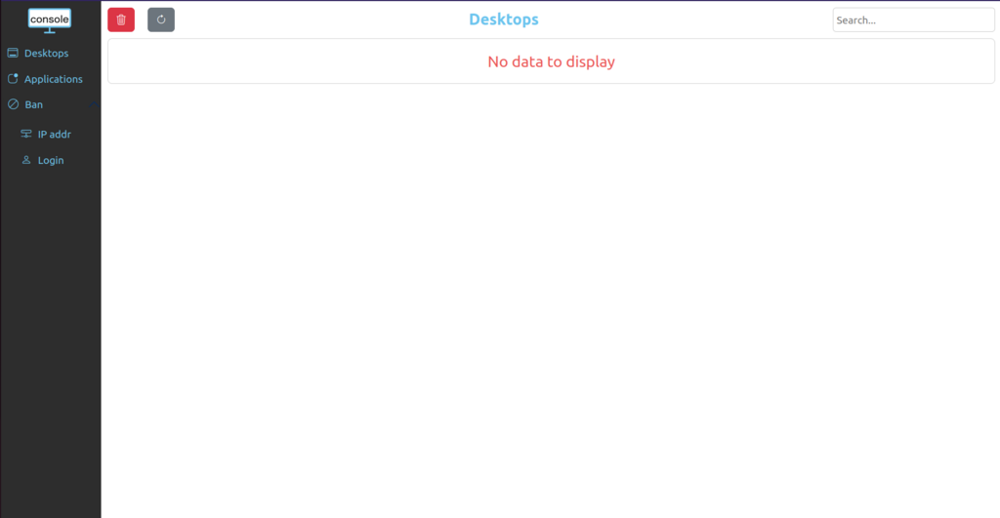
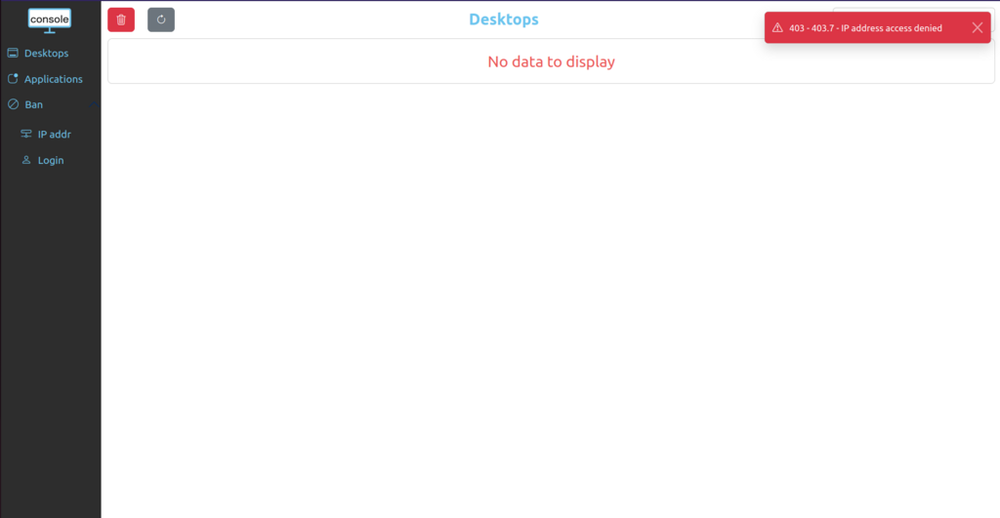

Publish your website as a public secured service
Requirements
- read the previous chapter Deploy abcdesktop on AWS with Amazon Elastic Kubernetes Service
- an AWS account
- your own internet domain
awscommand line interface aws-clikubectlcommand linehelmcommand line
Overview
In this chapter, we will use a nginx-ingress-controller to host your abcdesktop service with a public IP address, then configure the DNS zone file to use your own domain name, and enable TLS to secure your service.
Add tags for public subnets
By default, when creating your VPC, the public subnets do not have the kubernetes.io/role/elb=1 tag. However, this tag is mandatory in order to expose your service using an NGINX Ingress Controller with AWS. AWS scans your VPC, searching for subnets with this precise tag to place the ingress controller.
To do so, run the following command
aws ec2 create-tags --resources <your_public_subnets_ids> --tags Key=kubernetes.io/role/elb,Value=1
You can find your public subnets ids in the
Subnetspage of the VPC dashboard on AWS console
You can check if the tags have been applied by running the following command
aws ec2 describe-subnets --filters "Name=vpc-id,Values=<your_vpc_id>" "Name=tag:kubernetes.io/role/elb,Values=1" --query 'Subnets[*].[SubnetId,AvailabilityZone]' --output table
You should read on stdout
--------------------------------------------
| DescribeSubnets |
+---------------------------+--------------+
| subnet-09c09bd5bbdec72a6 | us-east-1b |
| subnet-02d592feab5bb0faf | us-east-1a |
+---------------------------+--------------+
Update http-router service
When installing abcdesktop, the http-router service type is NodePort by default. In order to expose the service through an ingress controller, you will need to change the service type from NodePort to ClusterIP.
If you perform a get services command you will see the NodePort type
kubectl get svc http-router -n abcdesktop
NAME TYPE CLUSTER-IP EXTERNAL-IP PORT(S) AGE
http-router NodePort 10.0.170.21 <none> 80:30443/TCP 5m31s
To change it, you will first need to delete the service
kubectl delete service http-router -n abcdesktop
service "http-router" deleted
Then paste the following lines in a new http-router.yaml file
kind: Service
apiVersion: v1
metadata:
name: http-router
labels:
abcdesktop/role: router-od
spec:
selector:
run: router-od
ports:
- protocol: TCP
port: 443
targetPort: 443
name: https
- protocol: TCP
port: 80
targetPort: 80
name: http
Then Create your new service/http-router
kubectl apply -f http-router.yaml -n abcdesktop
service/http-router created
Now check that the service type is ClusterIP
kubectl get svc http-router -n abcdesktop
NAME TYPE CLUSTER-IP EXTERNAL-IP PORT(S) AGE
http-router ClusterIP 10.0.132.230 <none> 443/TCP,80/TCP 5s
Deploy nginx ingress controller
You will now deploy a nginx ingress controller on your cluster using helm.
First, run the following command to add the nginx ingress controller repository :
helm repo add ingress-nginx https://kubernetes.github.io/ingress-nginx && helm repo update
Then install it on your cluster
helm install ingress-nginx ingress-nginx/ingress-nginx --namespace ingress-nginx --create-namespace
Once installed, you can verify that the service has been created by running this command:
kubectl get svc ingress-nginx-controller -n ingress-nginx
NAME TYPE CLUSTER-IP EXTERNAL-IP PORT(S) AGE
ingress-nginx-controller LoadBalancer 172.20.87.254 <pending> 80:32337/TCP,443:30414/TCP 34s
You will see that EXTERNAL-IP is <pending> for an extended period. This is completely normal because, by default, the controller treats your service as internal. To make it public, you should add annotations by running the following command:
kubectl annotate svc ingress-nginx-controller -n ingress-nginx service.beta.kubernetes.io/aws-load-balancer-scheme=internet-facing service.beta.kubernetes.io/aws-load-balancer-type=nlb --overwrite
Now you can run the previous command until you get an EXTERNAL-IP
kubectl get svc ingress-nginx-controller -n ingress-nginx
NAME TYPE CLUSTER-IP EXTERNAL-IP PORT(S) AGE
ingress-nginx-controller LoadBalancer 172.20.87.254 k8s-ingressn-ingressn-dc31c08978-b7ef1bca03cfe45b.elb.us-east-1.amazonaws.com 80:32337/TCP,443:30414/TCP 3m
Create new record
We are going to create a new record hello (hello.aws.pepins.net) using k8s-ingressn-ingressn-dc31c08978-b7ef1bca03cfe45b.elb.us-east-1.amazonaws.com as an alias.
First, you will need your load balancer hosted zone id. To get, run the following command :
aws elbv2 describe-load-balancers --region us-east-1 --query 'LoadBalancers[0].CanonicalHostedZoneId'
You should get something like this
Z26RNL4JYFTOTI
Now paste the following lines in a create-record-abcdesktop-aws.json file :
{
"Comment": "create a new record for abcdesktop on aws",
"Changes": [
{
"Action": "CREATE",
"ResourceRecordSet": {
"Name": "hello.aws.pepins.net.",
"Type": "A",
"AliasTarget": {
"HostedZoneId": "<your_hosted_zone_id>",
"DNSName": "k8s-ingressn-ingressn-dc31c08978-b7ef1bca03cfe45b.elb.us-east-1.amazonaws.com",
"EvaluateTargetHealth": false
}
}
}
]
}
Now, you will need to retrieve the hosted zone id of your domain on route 53. You can get it through the Route 53 web interface, or by running the following command :
aws route53 list-hosted-zones --query 'HostedZones[*].[Name,Id]' --output table
You should read something like this
--------------------------------------------------------
| ListHostedZones |
+------------------+-----------------------------------+
| aws.pepins.net. | /hostedzone/Z0710575SCBYT0OUKZP |
+------------------+-----------------------------------+
Finally, run this command to add the record :
aws route53 change-resource-record-sets --hosted-zone-id <your_domain_hosted_zone_id> --change-batch file://create-record-abcdesktop-aws.json
For example
aws route53 change-resource-record-sets --hosted-zone-id Z0710575SCBYT0OUKZP --change-batch file://create-record-abcdesktop-aws.json
You should read something like this
{
"ChangeInfo": {
"Id": "/change/C07091422RBO1K64I6QWN",
"Status": "PENDING",
"SubmittedAt": "2026-01-14T13:30:30.133000+00:00",
"Comment": "create a new record for abcdesktop on aws"
}
}
If you go to your Route 53 web console, you should see the record you just added

Configure NGINX Ingress Rules for Backend Services
In this step, you expose the backend applications to the outside world by telling nginx what host each service maps to. You define a rule in nginx to associate a host to a abcdesktop route backend service.
Create an ingress resource for NGINX using the abcdesktop service and save it as abcdesktop_host.yaml.
You need to update this manifest with your own FQDN, replace hello.aws.pepins.net by your own values.
apiVersion: networking.k8s.io/v1
kind: Ingress
metadata:
name: ingress-abcdesktop
namespace: abcdesktop
spec:
rules:
- host: hello.aws.pepins.net
http:
paths:
- path: /
pathType: Prefix
backend:
service:
name: http-router
port:
number: 80
ingressClassName: nginx
Apply the Ingress yaml file
kubectl apply -f abcdesktop_host.yaml -n abcdesktop
You should read
ingress.networking.k8s.io/ingress-abcdesktop created
Verify the ingress resources:
kubectl get ingress -n abcdesktop
The output looks similar to the following:
Wait a few seconds while the ADDRESS field is empty
NAME CLASS HOSTS ADDRESS PORTS AGE
ingress-abcdesktop nginx hello.aws.pepins.net 80 24s
When you obtain an IP ADDRESS
NAME CLASS HOSTS ADDRESS PORTS AGE
ingress-abcdesktop nginx hello.aws.pepins.net k8s-ingressn-ingressn-dc31c08978-b7ef1bca03cfe45b.elb.us-east-1.amazonaws.com 80 3m13s
The spec section of the manifest contains a list of host rules used to configure the Ingress. If unspecified, or no rule matches, all traffic is sent to the default backend service. The manifest has the following fields:
-
host specifies the fully qualified domain name of a network host, for example echo.
<your-domain-name>. -
http contains the list of HTTP selectors pointing to backends.
-
paths provides a collection of paths that map requests to backends.
In the example above, the ingress resource instructs NGINX to route each HTTP request using the / prefix for the hello.aws.pepins.net host to the route backend service running on port 80. In other words, every request to http://hello.aws.pepins.net/ is served by the http-router backend service on port 80.
You can have multiple ingress controllers per cluster. The ingressClassName field in the manifest differentiates between them. You can also define multiple rules for different hosts and paths within a single ingress resource.

Web browser doesn't allow usage of websocket without a secure protocol. To log in, you need to use
httpsprotocol.
As you can see, your website is Not Secured, we are going to add X509 SSL certificate to secure your service.
Enable HTTPS
Install Cert Manager add-on on AWS EKS marketplace
Navigate to the Add-ons section of your cluster on the AWS console, then click on Get more add-ons and install Cert Manager.

Once installed, you can inspect the Kubernetes resources created by Cert Manager:
kubectl get all -n cert-manager
The output looks similar to the following
NAME READY STATUS RESTARTS AGE
pod/cert-manager-76f99d9cbb-z5dgj 1/1 Running 0 3h26m
pod/cert-manager-76f99d9cbb-z7jnv 1/1 Running 0 3h26m
pod/cert-manager-cainjector-558b47dbf9-h55gx 1/1 Running 0 3h26m
pod/cert-manager-cainjector-558b47dbf9-lvgzl 1/1 Running 0 3h26m
pod/cert-manager-webhook-7db584cc6c-9qz5q 1/1 Running 0 3h26m
pod/cert-manager-webhook-7db584cc6c-l5s58 1/1 Running 0 3h26m
NAME TYPE CLUSTER-IP EXTERNAL-IP PORT(S) AGE
service/cert-manager ClusterIP 172.20.196.196 <none> 9402/TCP 3h26m
service/cert-manager-cainjector ClusterIP 172.20.102.95 <none> 9402/TCP 3h26m
service/cert-manager-webhook ClusterIP 172.20.105.49 <none> 443/TCP,9402/TCP 3h26m
NAME READY UP-TO-DATE AVAILABLE AGE
deployment.apps/cert-manager 2/2 2 2 3h26m
deployment.apps/cert-manager-cainjector 2/2 2 2 3h26m
deployment.apps/cert-manager-webhook 2/2 2 2 3h26m
NAME DESIRED CURRENT READY AGE
replicaset.apps/cert-manager-76f99d9cbb 2 2 2 3h26m
replicaset.apps/cert-manager-cainjector-558b47dbf9 2 2 2 3h26m
replicaset.apps/cert-manager-webhook-7db584cc6c 2 2 2 3h26m
The cert-manager pods and webhook service are running.
Cert-Manager creates custom resource definitions (CRDs). Cert-Manager relies on three important CRDs to issue certificates from a Certificate Authority (such as Let’s Encrypt):
Issuer: Defines a namespaced certificate issuer, which allows you to use different CAs in each namespace.
ClusterIssuer: Similar to Issuer, but it does not belong to a namespace and can be used to issue certificates in any namespace.
Certificate: Defines a namespaced resource that references an Issuer or ClusterIssuer for issuing certificates.
Inspect the CRDs by running the following command :
kubectl get crd -l app.kubernetes.io/name=cert-manager
The output looks similar to the following
NAME CREATED AT
certificaterequests.cert-manager.io 2026-01-19T10:23:33Z
certificates.cert-manager.io 2026-01-19T10:23:34Z
challenges.acme.cert-manager.io 2026-01-19T10:23:33Z
clusterissuers.cert-manager.io 2026-01-19T10:23:34Z
issuers.cert-manager.io 2026-01-19T10:23:34Z
orders.acme.cert-manager.io 2026-01-19T10:23:33Z
Configure Production-Ready TLS Certificates for nginx
You can issue the certificate using an Issuer. Configure a certificate issuers resource for Cert-Manager, which fetches the TLS certificate for nginx to use. The certificate issuer uses the HTTP-01 challenge provider to accomplish this task.
Create the following manifest, replace <your-valid-email-address> with your own value, and save it as cert-manager-issuer.yaml :
apiVersion: cert-manager.io/v1
kind: Issuer
metadata:
name: letsencrypt-nginx
spec:
acme:
email: <your-valid-email-address>
server: https://acme-v02.api.letsencrypt.org/directory
privateKeySecretRef:
name: letsencrypt-nginx-private-key
solvers:
# Use the HTTP-01 challenge provider
- http01:
ingress:
class: nginx
The ACME issuer configuration has the following fields:
email: Email address to be associated with the ACME account. server: URL used to access the ACME server’s directory endpoint. privateKeySecretRef: Kubernetes secret to store the automatically generated ACME account private key.
The ingress resources use the HTTP-01 challenge.
kubectl apply -f cert-manager-issuer.yaml -n abcdesktop
The output looks similar to the following
issuer.cert-manager.io/letsencrypt-nginx created
Verify that the Issuer resource is created:
kubectl get issuer -n abcdesktop
The output looks similar to the following
NAME READY AGE
letsencrypt-nginx True 7s
Next, configure each nginx ingress resource to use TLS. Open the previous abcdesktop_host.yaml manifest you created previously for the route application, add the annotations and tls sections shown below, and save the abcdesktop_host.yaml file : You can also add dedicated nginx.ingress.kubernetes.io annotations to increase default timeout values. Replace hello.aws.pepins.net by own FQDN
apiVersion: networking.k8s.io/v1
kind: Ingress
metadata:
name: ingress-abcdesktop
namespace: abcdesktop
annotations:
cert-manager.io/issuer: letsencrypt-nginx
nginx.org/client-max-body-size: "256M"
nginx.ingress.kubernetes.io/proxy-connect-timeout: "30"
nginx.ingress.kubernetes.io/proxy-read-timeout: "1800"
nginx.ingress.kubernetes.io/proxy-send-timeout: "1800"
nginx.ingress.kubernetes.io/proxy-body-size: "256M"
spec:
tls:
- hosts:
- hello.aws.pepins.net
secretName: letsencrypt-nginx-echo
rules:
- host: hello.aws.pepins.net
http:
paths:
- path: /
pathType: Prefix
backend:
service:
name: http-router
port:
number: 80
ingressClassName: nginx
Run the following command to configure the hosts to use TLS:
kubectl apply -f abcdesktop_host.yaml -n abcdesktop
After a few minutes, check the state of the ingress object:
kubectl get ingress -n abcdesktop
NAME CLASS HOSTS ADDRESS PORTS AGE
ingress-abcdesktop nginx hello.aws.pepins.net k8s-ingressn-ingressn-dc31c08978-b7ef1bca03cfe45b.elb.us-east-1.amazonaws.com 80, 443 42m
You see that 443 appeard in the PORTS section.
Check that the certificate resource is created
kubectl get certificates -n abcdesktop
The output looks similar to the following
NAME READY SECRET AGE
letsencrypt-nginx-echo True letsencrypt-nginx-echo 3m27s
Run a simple curl command line curl -Li https://hello.aws.pepins.net/ to confirm that your secured abcdesktop service is running.
curl -Li https://hello.aws.pepins.net/
HTTP/2 200
date: Mon, 19 Jan 2026 14:06:46 GMT
content-type: text/html
content-length: 56291
vary: Accept-Encoding
last-modified: Tue, 16 Dec 2025 11:52:18 GMT
etag: "694147f2-dbe3"
accept-ranges: bytes
x-frame-options: SAMEORIGIN
x-xss-protection: 1; mode=block
strict-transport-security: max-age=31536000; includeSubDomains
<!doctype html>
...
Reach your website using https protocol
You can now connect to your public abcdesktop website using https protocol.

The status is secured and we get some information from the certificate

See real client IP address behind ingress controller
Now that your application is publicly exposed, you may be wondering about security and traffic inside your cluster.
For example, the console module of abcdesktop should not be accessible to everyone, as it is designed to be an administrator console. That is why, when you install abcdesktop, there is a pool of permitted IP addresses specified in the od.config file.
ManagerController': { 'permitip': [ '10.0.0.0/8', '172.16.0.0/12', '192.168.0.0/16', 'fd00::/8', '169.254.0.0/16', '127.0.0.0/8' ] }
By default, the configuration only permits private networks as defined in RFC 1918 and RFC 4193. Because your service is publicly exposed, none of your visitors should be able to access the console. However, you may find that you can access the console normally, which is not the expected behavior.

And when you check Pyos logs you will see why console behaves like that.
kubectl get pods -n abcdesktop
NAME READY STATUS RESTARTS AGE
console-od-5cd84fdd69-zbjxf 1/1 Running 0 11m
memcached-od-6ccd5b5f67-wwnw8 1/1 Running 0 11m
mongodb-od-0 2/2 Running 0 11m
nginx-od-784885cbd5-b7dqx 1/1 Running 0 11m
openldap-od-bb485cb4b-2ltm8 1/1 Running 0 11m
pyos-od-5c5cfdbfc8-t9r9m 1/1 Running 0 11m
router-od-6b7456b789-dsqdh 1/1 Running 0 11m
speedtest-od-8686c67749-hncft 1/1 Running 0 11m
kubectl exec -it pyos-od-5c5cfdbfc8-t9r9m -n abcdesktop -- bash
Defaulted container "pyos" out of: pyos, wait-for-mongo (init)
pyos-od-5c5cfdbfc8-t9r9m:/var/pyos# tail logs/trace.log
2026-02-06 16:03:51 abcpool1-node-fa2594 139923622185784 base_controller [DEBUG ] controllers.manager_controller.ManagerController.apifilter:anonymous
2026-02-06 16:03:51 abcpool1-node-fa2594 139923622185784 base_controller [DEBUG ] controllers.manager_controller.ManagerController.ipfilter:anonymous
2026-02-06 16:03:51 abcpool1-node-fa2594 139923622185784 base_controller [DEBUG ] controllers.manager_controller.ManagerController.ipfilter:anonymous ipsource 10.2.1.0 is permited in network 10.0.0.0/8
2026-02-06 16:03:51 abcpool1-node-fa2594 139923622185784 manager_controller [DEBUG ] controllers.manager_controller.ManagerController.handle_desktop_GET:anonymous
2026-02-06 16:03:51 abcpool1-node-fa2594 139923622185784 orchestrator [DEBUG ] oc.od.orchestrator.ODOrchestratorKubernetes.__init__:anonymous load_incluster_config done
2026-02-06 16:03:51 abcpool1-node-fa2594 139923622185784 od [INFO ] __main__.trace_response:anonymous /manager/desktop b'[]'
2026-02-06 16:03:55 abcpool1-node-fa2594 139923627645752 od [INFO ] __main__.trace_request:anonymous /healthz
2026-02-06 16:04:05 abcpool1-node-fa2594 139923618954040 od [INFO ] __main__.trace_request:anonymous /healthz
2026-02-06 16:04:15 abcpool1-node-fa2594 139923617876792 od [INFO ] __main__.trace_request:anonymous /healthz
2026-02-06 16:04:25 abcpool1-node-fa2594 139923621108536 od [INFO ] __main__.trace_request:anonymous /healthz
As you can see in the logs, the source IP address seen by Pyos is a private IP address such as 10.X.X.X (within the subnet defined as internal to your cluster), which falls within the pool of permitted IP addresses.
That happens because the NGINX Ingress Controller we set up earlier does not forward the client's public IP address; instead, it balances requests using its own cluster IP address. As a result, both Router and Pyos see the IP address of the ingress controller load balancer.
To fix that, we have to update the configuration of our NGINX Ingress Controller. Paste the following lines in a patch-ingress.yaml file:
controller:
service:
externalTrafficPolicy: "Local"
annotations:
service.beta.kubernetes.io/aws-load-balancer-type: "nlb"
service.beta.kubernetes.io/aws-load-balancer-scheme: "internet-facing"
service.beta.kubernetes.io/aws-load-balancer-nlb-target-type: "ip"
service.beta.kubernetes.io/aws-load-balancer-proxy-protocol: "*"
service.beta.kubernetes.io/aws-load-balancer-target-group-attributes: "proxy_protocol_v2.enabled=true,preserve_client_ip.enabled=true"
config:
use-proxy-protocol: "true"
real-ip-header: "proxy_protocol"
proxy-real-ip-cidr: "10.0.0.0/8"
log-format-upstream: '{"time": "$time_iso8601", "remote_addr": "$proxy_protocol_addr", "x_forwarded_for": "$proxy_add_x_forwarded_for", "http_x_forwarded-for": "$http_x_forwarded_for", "request_id": "$req_id", "remote_user": "$remote_user", "bytes_sent": $bytes_sent, "request_time": $request_time, "status": $status, "vhost": "$host", "request_proto": "$server_protocol", "path": "$uri", "request_query": "$args", "request_length": $request_length, "method": "$request_method", "http_referrer": "$http_referer", "http_user_agent": "$http_user_agent" }'
Now run the following command to apply it
helm upgrade ingress-nginx ingress-nginx/ingress-nginx -n ingress-nginx -f patch-loadbalancer.yaml
You can now retry to connect to console, you should see an error message on the top right

You can also check the logs of Pyos, you should see your public IP address as source IP
kubectl exec -it pyos-od-5c5cfdbfc8-t9r9m -n abcdesktop -- bash
Defaulted container "pyos" out of: pyos, wait-for-mongo (init)
pyos-od-5c5cfdbfc8-t9r9m:/var/pyos# tail logs/trace.log
2026-02-06 16:25:25 abcpool1-node-fa2594 139923622185784 od [INFO ] __main__.trace_request:anonymous /healthz
2026-02-06 16:25:35 abcpool1-node-fa2594 139923627645752 od [INFO ] __main__.trace_request:anonymous /healthz
2026-02-06 16:25:37 abcpool1-node-fa2594 139923618954040 od [INFO ] __main__.trace_request:anonymous /manager/healtz
2026-02-06 16:25:37 abcpool1-node-fa2594 139923618954040 base_controller [DEBUG ] controllers.manager_controller.ManagerController.apifilter:anonymous
2026-02-06 16:25:37 abcpool1-node-fa2594 139923618954040 base_controller [DEBUG ] controllers.manager_controller.ManagerController.ipfilter:anonymous
2026-02-06 16:25:37 abcpool1-node-fa2594 139923618954040 base_controller [INFO ] controllers.manager_controller.ManagerController.ipfilter:anonymous ipsource <your_public_ip> access is denied, not in network list [IPNetwork('10.0.0.0/8'), IPNetwork('172.16.0.0/12'), IPNetwork('192.168.0.0/16'), IPNetwork('fd00::/8'), IPNetwork('169.254.0.0/16'), IPNetwork('127.0.0.0/8')]
2026-02-06 16:25:37 abcpool1-node-fa2594 139923618954040 base_controller [ERROR ] controllers.manager_controller.ManagerController.raise_http_error_message:anonymous 403.7 - IP address access denied
2026-02-06 16:25:37 abcpool1-node-fa2594 139923618954040 od [INFO ] __main__.trace_response:anonymous /manager/healtz b'{"status": 403, "message": "403.7 - IP address access denied"}'
2026-02-06 16:25:45 abcpool1-node-fa2594 139923617876792 od [INFO ] __main__.trace_request:anonymous /healthz
2026-02-06 16:25:55 abcpool1-node-fa2594 139923621108536 od [INFO ] __main__.trace_request:anonymous /healthz